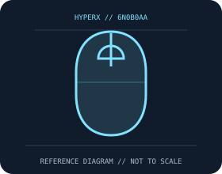

[ MICE AND TRACKBALLS // IDENTIFIED COMPONENT ]
HyperX Pulsefire Haste 2 Wireless Gaming Mouse
Lightweight rechargeable mouse offering 2.4 GHz wireless, Bluetooth, and wired USB-C operation with a HyperX 26K sensor.

MODEL IDENTIFICATION: 6N0B0AA. Confirm printed identifiers, revision, region, and included accessories before repair or compatibility claims.
Model specifications
| Catalog leaf | Mice and trackballs |
|---|---|
| Exact model / identifier | 6N0B0AA |
| Sensor and switches | HyperX 26K optical sensor, up to 26,000 DPI and 650 IPS; 1,000 Hz report rate. HyperX custom mechanical switches are rated up to 100 million clicks. |
| Wired/wireless interface; polling and DPI | 2.4 GHz USB receiver, Bluetooth, or wired USB-C; the cable supports wired use and charging. NGENUITY supports settings on compatible Windows systems. |
| Dimensions and weight | 124.3 × 66.8 × 38.2 mm; approximately 61 g. |
| Host and driver compatibility | Basic Bluetooth/USB HID pointer operation requires compatible host support. NGENUITY functions and firmware are OS/version dependent; verify HyperX support for the exact hardware and software revision. |
| Power and battery | Rechargeable internal battery via USB-C; manufacturer advertises up to 100 hours under stated test conditions. Battery age, radio mode, and usage affect runtime. |
| Revision and SKU caveats | Verify SKU 6N0B0AA, region, and hardware revision; the wired Pulsefire Haste 2 and first-generation Haste use different interfaces/specifications. The maximum runtime and switch life are manufacturer claims. |
Preservation and service
Keep the receiver, cable, battery cover, and included accessories with the identified mouse. Clean optical apertures and trackball contacts without introducing liquid; record host OS, driver/firmware version, connection mode, and battery condition during tests.
Published maximum DPI, polling, click-life, and runtime values are manufacturer figures under specific test conditions, not a guarantee of individual-unit performance.
Manufacturer sources
- HyperX Pulsefire Haste 2 Wireless product pageManufacturer product or support documentation; confirm the exact SKU, region, and revision against the device label.
- HyperX product supportManufacturer product or support documentation; confirm the exact SKU, region, and revision against the device label.
Manufacturer documentation changes over time; retain the applicable manual and revision with the physical equipment record.